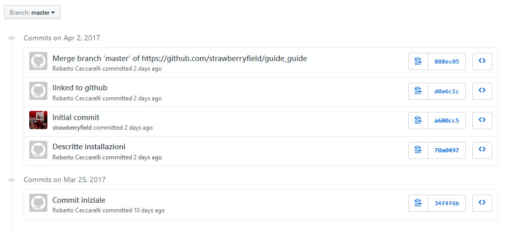

4. Condividere i sorgenti¶
Finora abbiamo gestito la scrittura della nostra guida sul nostro PC: in questo capitolo vederemo come condividere i nostri files sorgenti su una piattaforma internet che ci consentirà di condividerli ed utilizzarli per una scrittura condivisa.
La piattaforma che ci consente questo è GitHub (https://github.com//): una volta registrati (gratuitamente) si possono creare infiniti repository per tutti i nostri progetti.
4.1. Creare un repository su GitHub¶
Una volta creato l’account su GitHub ci viene data la possibilità di creare un nuovo repository
clicchiamo su Start a project e completiamo questo form:
scegliendo un nome appropriato per il progetto (che comunque potrà essere cambiato in seguito)
Inseriamo una breve, ma significativa, descrizione e abilitiamo la generazione del readme.
Non preoccupiamoci del file .gitignore (ne abbiamo già uno nel nostro repository locale)
e nemmeno della licenza che inseriremo in seguto
(le licenze proposte sono rivolte alla scrittura di software e poco adatte alla documentazione).
Il tipo di repository va lasciato su Public: in questo modo chiunque, anche non iscritto a GitHub
può leggerne e scaricare il contenuto; gli eventuali utenti che autorizzeremo potranno anche aggiornarlo.
Confermiamo il tutto con Create repository e GitHub ci presenterà il repository appena creato:

4.2. Sincronizzare i repository¶
In questo momento abbiamo due repository separati: uno sul nostro PC ed uno su GitHub. Dovremo fondere i due repository in modo da poter replicare le modifiche locali sul repository remoto e viceversa.
4.2.1. Pull del repository remoto¶
Apriamo il prompt dei comandi nella nostra cartella di lavoro e scriviamo:
git pull guide_guide master --allow-unrelated-histories
Dove a guide_guide dovremo sostituire il nome del nostro repository remoto.
Otterremo in risposta qualcosa di simile a questo:
From https://github.com/strawberryfield/guide_guide
* branch master -> FETCH_HEAD
Merge made by the 'recursive' strategy.
README.md | 2 ++
1 file changed, 2 insertions(+)
create mode 100644 README.md
Il repository su github è stato fuso con quello locale: ce ne accorgiamo
perchè nella nostra directory di lavoro è apparso il file README.md
che era l’unico presente nel repository remoto.
Possiamo chiudere la shell comandi.
4.2.2. Push del repository locale¶
Riapriamo la GUI di Git e premiamo Push
Con questa operazione trasferiamo il contenuto del repository locale su quello remoto.
Non c’è nulla da modificare e quindi confermiamo premendo Push.
Al termine del trasferimento riceveremo questa conferma:
Il nostro repository è stato trasferito su GitHub e se controlliamo dal sito possiamo vedere che ci sono tutti i nostri file

e non solo: vengono sincronizzati anche tutti i commit che abbiamo eseguito sul PC locale
